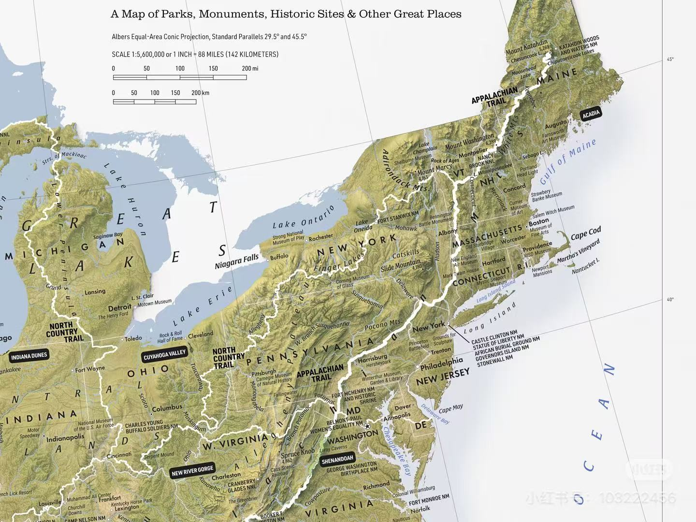
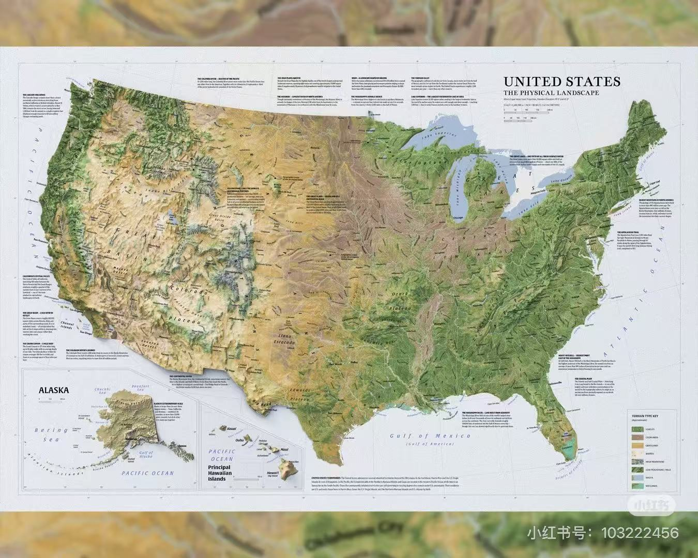

How landscapes became economies, social systems, and political divisions — from pre-colonial North America to 1860.
Pre-Colonial America — 1860
AP US HistoryRachel Tan · Greta Wang
01
Open by saying: Our argument is not that geography mechanically determined American history. Geography created opportunities and limitations; markets, technology, and institutions determined how those opportunities were used.
01 / The framework Geography is the starting point
Geography created possibilities. Institutions shaped the consequences.
Natural conditions encouraged different activities — but markets, technology, political institutions, land policies, and labor systems transformed those differences into regional economies, social inequalities, and political divisions.
Key qualification Geography did not determine outcomes by itself. Human decisions determined who controlled resources, who performed the labor, and who benefited from growth.
Selected layer / 01
Geographic conditions
Start with the physical world — but treat it as a set of possibilities, not a fixed destiny.
01Geographic conditions
02Economic specialization
03Labor & property
04Technology & transport
05Social conditions
06Sectional conflict
Framework from the project outline; supported by Carlos, Cameron & Duff, Sokoloff & Engerman, Atack & Margo, and Nagy.
02
We use six layers. First, geography creates different possibilities. Second, regions specialize economically. Third, economic specialization creates labor and property systems. Fourth, technology changes the value of geographic advantages. Fifth, those systems shape social conditions. Finally, regional differences become political conflict. The chain is historical and cumulative rather than perfectly linear.
Layer 1 / Before colonization
Different environments, different possibilities.
North America was not an empty or economically undeveloped space. Indigenous societies adapted to — and actively modified — very different environments.
Choose a region to trace the mechanism
Environment → economic practice
Click one of the four regional cards below. The point is adaptation, not environmental determinism.
Arid climate → irrigation agriculture and settled communities.
Pacific Northwest
Coastal resources and forests → fishing, trade, complex communities.
Eastern Woodlands
Forests, rivers, fertile land → agriculture, hunting, regional trade.
Great Plains
Grasslands and mobile resources → hunting and later horse-based societies.
Image: NOAA / Robert Schwemmer. Argument: Carlos; Cameron & Duff.
03
Before European colonization, North America contained diverse Indigenous economies and social organizations. Carlos shows that Chumash communities used coastal resources, developed plank canoes, organized trade, and used shell-bead money. Cameron and Duff show that similar environmental pressures could produce different settlement outcomes because historical connections and social choices mattered. Transition: European colonization later reorganized these environments around Atlantic markets, private property, imperial policy, and new labor systems.
Transition / Layer 1 → Layer 2
Environmental differences became regional economic differences.
The mechanism was not geography alone: environment + markets + institutions converted possibilities into specialization.
01 / STARTING CONDITION
Environment
Climate, soil, waterways, forests, and coastlines created different possibilities.
02 / TRANSFORMATION
Colonial markets
Atlantic demand made some resources and crops more profitable than others.
03 / RESULT
Regional economies
New England, the Middle Colonies, and the South developed distinct economic profiles.
What changes? Indigenous adaptation becomes colonial reorganization.
04
This is the first causal transition. Layer 1 shows that environments created possibilities, but Indigenous societies made choices within them. Layer 2 asks what happened when colonization connected those environments to Atlantic markets, imperial rules, and private property. The result was not one American economy, but regional specialization.
Layer 2 / 1500s–1750s
Geography encouraged regional specialization.
The question is not whether geography caused an economy, but how markets and institutions converted geographic advantages into profitable systems.

New England
Rocky soil · short growing season · coastline
Fishing, shipbuilding, timber, trade, and port towns.
Maritime economy
Middle Colonies
Fertile soil · rivers · ports
Grain farming, commerce, immigration, New York and Philadelphia.
Colonial geography encouraged specialization. New England’s rocky soil and short growing season limited large-scale staple agriculture, but forests and coastline supported fishing, shipbuilding, timber, and Atlantic trade. The Middle Colonies combined fertile land and waterways, supporting grain production, ports, and a diverse population. The Southern Colonies had a climate and soil suited to tobacco, rice, and indigo. Markets made certain crops profitable, colonial governments shaped land ownership, and imperial trade connected local production to Atlantic demand.
Transition / Layer 2 → Layer 3
A profitable regional economy requires a labor system.
Once regions specialized, the central question became: who controls land, labor, and the gains from production?
01 / ECONOMIC SIGNAL
Profitable crop
Tobacco, rice, grain, timber, and trade created different labor demands.
02 / INSTITUTIONAL CHOICE
Land policy
Property rules and colonial power determined who could claim and keep land.
03 / SOCIAL RESULT
Labor regime
Wage labor, indenture, slavery, and Indigenous dispossession produced unequal societies.
What changes? Regional specialization becomes ownership, labor, and hierarchy.
06
Layer 2 explains what regions produced. Layer 3 explains how production became social structure. A crop or resource did not automatically create slavery or inequality; institutions, markets, law, and racial ideology organized the labor needed to exploit that geographic opportunity.
Layer 3 / Economic systems become social systems
Who owns the land? Who controls the labor?
Economic geography became social structure through institutions.
South
Plantation crops → large labor demand → racialized hereditary slavery
Land and wealth concentrated among planters.
Enslaved people denied freedom, property, and political rights.
North
Small farms, commerce, manufacturing → wage labor and immigration
Merchants and industrial employers gained influence.
Class divisions still shaped daily life.
West
Land and resources → settlement and opportunity for some
Federal policy expanded settlement.
Indigenous peoples were displaced.
Geography made certain activities possible; institutions determined who benefited.
Morgan; Berlin; Sokoloff & Engerman.
07
Do not say that geography directly caused slavery. The more accurate claim is that geography made plantation crops profitable, while markets, laws, racial ideology, and political institutions made slavery the dominant labor system. The North also had inequality: merchants, employers, workers, immigrants, and small farmers occupied different positions. The West offered opportunity to some settlers while that opportunity depended on the displacement of Indigenous peoples.
Transition / Layer 3 → Layer 4
Technology changed the scale of existing regional systems.
New transport did not remove inequality. It connected, accelerated, and expanded the systems already built around land and labor.
01 / EXISTING STRUCTURE
Land & labor
Regions already had different property relations, labor systems, and political interests.
02 / NEW CAPACITY
Transport
Canals, steamboats, roads, and railroads reduced distance and transport costs.
03 / EXPANSION
Market reach
Production, migration, cities, and demand expanded beyond local environments.
What changes? Geography becomes a network, not just a location.
08
Technology is the hinge in the argument. It changes which geographic advantages matter, but it does not create a neutral society. Canals and railroads can connect places while also increasing the value of some land, strengthening some cities, and expanding labor systems such as plantation slavery.
Layer 4 / Early Republic → Market Revolution
Technology changed the meaning of geography.
Transportation
Canals, roads, steamboats, and railroads reduced transportation costs and connected inland production to ports.
Cotton gin
Short-staple cotton became more profitable; cultivation expanded into the Deep South and demand for enslaved labor increased.
Industrialization
Factories developed around ports, capital, transportation networks, and labor — creating wealth and class inequality.
Technology did not erase geography. It changed which geographic advantages mattered.
Technology changed which geographic advantages mattered. The Mississippi River connected western agriculture to national and international markets. The Erie Canal strengthened the connection between the interior and Atlantic ports. The cotton gin made short-staple cotton more profitable and helped cotton expand into the Deep South, increasing demand for enslaved labor. Atack and Margo show that railroad access promoted agricultural improvement and higher farm values. Nagy shows how agricultural hinterlands, transportation, and trade helped form cities and economic growth.
Transition / Layer 4 → Layer 5
Faster connections did not erase place. They intensified regional identity.
Transportation linked the country, while uneven access to capital, land, labor, and markets produced distinct regional societies.
01 / NETWORK
Movement
Goods, workers, migrants, and ideas moved more quickly across the country.
02 / UNEVEN ACCESS
Regional hubs
Ports, river towns, industrial cities, and plantation districts gained different advantages.
03 / SOCIAL FORM
Distinct societies
Economic systems shaped class relations, race relations, urban life, and political culture.
What changes? Connected markets produce visibly different ways of life.
10
Layer 4 explains connection; Layer 5 explains uneven outcomes. The same market revolution that integrated the United States also made the North, South, and West more socially distinct. Integration and regionalism therefore happened at the same time.
Layer 5 / 1820s–1860
Regional economic systems shaped social conditions.
The same national expansion that created economic opportunity also produced inequality based on class, race, labor status, and land ownership.
Interactive map lensMap / reset

N
S
W
Click a region: the map zooms in, then lifts that region out as a visual argument.
By the Market Revolution, the North, South, and West had become distinct regional societies. The North developed factories, wage labor, cities, immigration, and an industrial working class. The South’s Cotton Kingdom concentrated wealth and political power in a planter elite, while slavery and race structured the major institutions of society. The West combined settlement, farming, mining, opportunity, land inequality, and Indigenous displacement.
Transition / Layer 5 → Layer 6
Different societies eventually competed over the future of the nation.
Regional economic differences became political conflict when expansion forced one national question: which labor and property system would spread west?
01 / ECONOMY
Specialization
Industry, cotton, and western land created different regional interests.
02 / SOCIETY
Social interests
Class, race, labor status, and land ownership shaped competing visions of freedom.
03 / POLITICS
Sectional crisis
Territorial expansion turned regional difference into a struggle over national power.
What changes? Regionalism becomes sectionalism when geography becomes policy.
12
This is the final causal transition. Regional societies were economically connected, but their institutions and interests were not the same. Westward expansion made the conflict unavoidable because every new territory raised the question of whether slavery, free labor, or another land system would determine the nation’s future.
Layer 6 / Regionalism becomes sectionalism
Economic interdependence did not eliminate conflict.
As the United States expanded westward, geography became a political struggle over land, labor, slavery, and the balance of power.
Different regional interests1820 · political balance
South: free trade and protection of plantation agriculture and slavery.
West: land access, transportation, and political influence.
1820
Missouri Compromise Political balance
1850
Compromise of 1850 New territories
1854
Kansas–Nebraska Act Popular sovereignty
1860
Sectional crisis Political polarization
Foner; Potter. Political events are used as evidence of a larger regional process.
13
The regions were economically interdependent. The South produced cotton, the North provided shipping, finance, manufacturing, and commercial services, and the West supplied agricultural products and land. But interdependence made national policy more important. Foner explains the free-labor ideology that opposed slavery’s expansion into the West. Potter shows how territorial expansion intensified sectional polarization. Use the three compromises as evidence, not as a list of events to memorize.
Conclusion / Critical analysis
Geography was the starting point, not the final explanation.
Geography created regional possibilities. Institutions determined how those possibilities affected people’s lives.
Questions worth debating
Did geography cause slavery, or did institutions make it dominant?
Did technology reduce geography’s importance, or create new advantages?
Was westward expansion equal opportunity or a redistribution of land and power?
Did interdependence promote unity or sectional conflict?
What geography offers
Possibility
Climate · soil · water · land · distance
What institutions decide
Distribution
Labor · property · markets · political power
What society experiences
Consequence
Opportunity · inequality · regional conflict
Geography
→
Specialization
→
Institutions
→
Inequality
→
Conflict
Our final answer to the research question
14
Our final answer is that geography shaped American development by creating different regional possibilities, but markets, technology, labor systems, land policy, and political institutions determined how those possibilities affected people’s lives. Over time, economic specialization became different labor systems and social inequalities, which eventually produced regional political conflict. End with the distinction: geography created the conditions for regionalism; institutions determined the consequences.
Selected evidence
Sources behind the visual argument.
Indigenous economiesCarlos, “The Country They Built”; Cameron & Duff, “History and Process in Village Formation.” Cambridge · WSU
Colonial economiesMcCusker & Menard; Slater, “The Economy of Colonial British America.” New England · Middle Colonies · Upper South
Transport and growthAtack & Margo; Nagy, “Hinterlands, City Formation and Growth.” JTLU · BSE
Institutions and inequalityMorgan; Berlin; Sokoloff & Engerman. Labor · property · race · political power
Regional societiesSellers, *The Market Revolution*; Johnson, *River of Dark Dreams*. North · South · West
Geography created the conditions. Institutions shaped the consequences.
Maps: user-provided relief maps. Chumash image: NOAA / Robert Schwemmer. Historical map sources should be cited in the final bibliography.
15
This source slide is for the final deck or handout. Before submitting the paper, verify exact edition, publication year, chapter title, DOI, and page numbers for JSTOR and Oxford sources from the PDFs or library records.
← → navigate · click maps/timeline · S notes · E edit · O overview · F fullscreen
01 / 15
EDIT MODE · click any text to revise · changes save locally